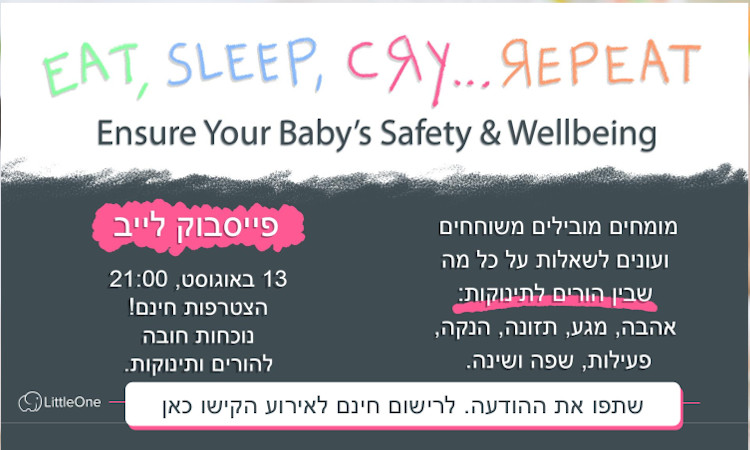

סרטונים
פיזיותרפיה התפתחותית

EAT, SLEEP, CRY... REPEAT
מומחים מובילים משוחחים ועונים לשאלות על כל מה שבין הורים לתינוקות: אהבה, מגע, תזונה, הנקה , פעילות, שפה ושינה
בימים אלו חשוב שכולנו נרים את הראש
קבלו סרטון קצר עם כמה טיפים לעידוד הרמת ראש אצל תינוקות
איך ניתן לעזור לתינוק להתהפך
קבלו סרטון קצר על גלגולים, איך ניתן לעודד תינוק להתהפך מהגב אל הבטן ולהיפך כמובן שנרצה לראות אותו עושה זאת משני הצדדים....
מעובר לתינוק התפתחות מוטורית בשנה הראשונה לחיים
הרצאה חשובה לכל הורה, בואו לשמוע עד כמה חשובה השנה הראשונה בחיינו וכמה באמת היא משמעותית על המשך ההתפתחות ועל העתיד שלנו. כמה השפעה יש לנו כאמהות כבר על העוברים שבבטן ולנו כהורים בתקופה הקריטית הזאת. בואו לקבל כלים שיוכלו תמיד לעזור לכם כהורים אם תרצו ללמד את ילדכם כל פעולה. ולשמוע איך ניתן למנוע העדפת צד, להבין מהו טונוס ומה נוכל לעשות על מנת לעודד התפתחות תקינה ללא איחורים, עיכובים או התערבות טיפולית.
פאנל פיזיותרפיסטיות התפתחותיות בתוכנית הרדיו מגדלים הורים
מהי פיזיותרפיה התפתחותית? מה היא כוללת? פאנל שעוסק בראייה הכוללת, בהבנה שילד והקושי שלו אינו עומד לבדו, הוא חלק בלתי נפרד מהמשפחה שלו והיחסים איתם משפיעים עליו וכמובן על ההתקדמות בטיפול. בואו לשמוע תוכנית מעניינת מ 4 נשות מקצוע שכל אחת מהן מתמקדת בטיפול בילדים בתחום הייחודי לה ורואות את הפיזיותרפיה כטיפול יותר רחב ומשמעותי.
שיקום רצפת אגן
להרגיש את רצפת האגן
אחרי שערכנו הכרות עם רצפת האגן, בואו ננסה להרגיש אותה, לעלות מודעות אליה, נשתמש בכל החושים שלנו
כיווץ ושחרור של רצפת האגן
איך נדע אם אנחנו מכווצות נכון ? קבלו הסבר קצר על כיווץ ושחרור של רצפת אגן שתי סיטואציות שכולכן מכירות וישר תבינו על מה אני מדברת... בהצלחה
חזרה לפעילות עצימה אחרי לידהן
איך אפשר לדעת מתי אפשר להתחיל פעילות עצימה לאחר לידה????? עשינו לכן סרטון בדיוק בשביל זה.. על בסיס מחקר מעולה שפורסם ונותן את כל התשובות.. תהנו ובהצלחה!
רצפת אגן לילדים
מערכת העיכול והשתן - ביחד ננצח !
מה קורה למערכת העיכול והשתן בחוסר שגרה, בזמני לחץ וסטרס, וכעת במלחמה. איך ניתן להתמודד בתקופה המורכבת הזאת עם גמילות מחיתולים שמסתבכות, ילדים שמרטיבים ביום או בלילה, עם ילדים שמתאפקים עד כדי עצירויות. האם יש דרך לעזור להם ? מה אנחנו כהורים יכולים לעשות ? נדבר על הטיפול המשולב (פיזי וריגשי) והתמודדות עם הבעיות הנ"ל. ההקלטה כוללת גם כ-40 דקות של שאלות מהקהל.
הרצאה בנושא טיפול ייחודי - רצפת אגן לילדים והדרכת הורים
חושבים איך להתחיל גמילה מחיתולים? ילדכם סובל מעצירות או מדליפות שתן במהלך היום או הלילה? בואו לשמוע על טיפול ייחודי שמשלב בתוכו גם מענה לצד הפיזי וגם לצד הרגשי הרי לא ניתן להפריד בניהם.... פיזיותרפיה רצפת אגן לילדים והדרכת הורים! הרצאת חובה לכל הורה!
הטיפול המשלים (רצפת אגן לילדים והדרכת הורים) הרצאה לרופאים ואנשי טיפול
סרטון קצר שמיועד לרופאים, רופאי משפחה, גסטרולוגים, אורולוגים, רופאי ילדים. אנשי טיפול פסיכולוגים, מטפלים רגשיים, מטפלים פרה רפואיים, מדריכי הורים. על מנת לעלות מודעות לטיפול המשלים לשלהם, רצפת אגן לילדים בשילוב עם הדרכת הורים, לפרוטוקול טיפול רשמי בעצירויות, הרטבות לילה, חוסר שליטה על הסוגרים, דלקות שתן חוזרות, גמילה מחיתולים שלא צלחה. סקירת ספרות מעודכנת משנת 2020 על הנושאים הנל. הרצאה חשובה לכל אנשי הטיפול, כך נוכל לעזור ליותר ילדים ומשפחות.
הטיפול השלם רצפת אגן לילדים והדרכת הורים
הרצאה באורך מלא, הרצאת חובה לכל הורה על בעיות שכיחות, איך כדי להתחיל גמילה מחיתולים, איך מתמודדים עם עצירות אצל ילדים, מה אפשר לעשות כדי להיפטר מהרטבות לילה, מה הקשר לכל אלו ולדלקות חוזרות בשתן. האם זה רגשי או פיזי? התנהגותי או אורגני? מהו טיפול פיזיותרפיה רצפת אגן לילדים ואיך משלבים את זה עם הדרכת הורים. עד כמה זה באמת חשוב להתייחס לצד הרגשי והפיזי ביחד ואיך השילוב בניהם מנצח.
ניפוץ מיתוסים ברצפת אגן לילדים
מה זה בכלל טיפול רצפת אגן לילדים? האם יש כזה תחום? איך מתחילים גמילה מחיתולים? עדיף בקיץ? עדיף עם הגן? עדיף גמילה מוקדמת? או רק כשהוא ממש בשל? ואם מתחילים אז להוריד יום ולילה ביחד? מה עושים עם עצירויות אצל ילדים? איך נפתרים מהרטבות לילה? אם דולף להם הם בטוח מרגישים? הם עסוקים מידי במשחק ולכן בורח להם? אולי ישנים חזק מידי? האם יש מעורבות רגשית לכל אלו? בואו לשמוע לייב שיעניין כל הורה, על בעיות שכיחות וטיפול משולב של רצפת אגן לילדים עם הדרכת הורים.
תוכנית רדיו בנושא רצפת אגן לילדים וטיפול משולב עם הדרכת הורים יחד עם אורלי נייגר מגדלים הורים
בואו לשמוע על נושאים שמעניינים כל משפחה, גמילה מחיתולים, עצירויות, הרטבות לילה ודלקות חוזרות בשתן. קבלו טיפים איך צולחים את תהליך הגמילה באופן טוב ומה אפשר לעשות כשזה מסתבך ולא הולך כמו שצריך. האם זה רגשי? האם זה פיזי? האם הילד לא מרגיש שבורח לו? בואו לשמוע על טיפול שמוכח מחקרית ויכול לעזור
תיאור מקרה ביום עיון לבריאות האישה - העמותה לקידום הפיזיותרפיה
מוצג תיאור מקרה כחלק מיום עיון בריאות האישה של העמותה לקידום הפיזיותרפיה. משך ההרצאה כ 10 דק. המקרה מדבר על טיפול של רצפת אגן לילדים ועל החשיבות של הדרכת הורים כחלק מהטיפול. בנוסף נותן טיפים לפיזיותרפיסטים ואנשי טיפול למה לשים לב בקליניקה.
אדלר על קצה המזלג
מוצג תיאור מקרה כחלק מכנס להתפתחות הילד של העמותה הישראלית להתפתחות הילד ושיקומו. משך ההרצאה כ 15 דק. המקרה מדבר על טיפול של רצפת אגן לילדים ועל החשיבות של הדרכת הורים כחלק מהטיפול. בנוסף נותן טיפים לפיזיותרפיסטים ואנשי טיפול למה לשים לב בקליניקה.
הדרכת הורים
גבולות ברורים עם יחסים טובים
סרטון שנעשה להורי הגנים לכבוד יום המשפחה, הרצאה שמדברת על חוקים וגבולות, עם שמירה על יחסים טובים במשפחה. ההרצאה מפרטת מהם חוקי הייסוד, מה ההבדל בין גבול לחוק? איך אפשר להשיג מילד שיתוף פעולה, מה הסיבה שילד לא משתף פעולה, מהי תשומת לב יתרה? ומהו מאבק כוח? איך ניתן לצאת ממאבק כוח? מספר כלים פרקטים לשמור על יחסים טובים ולהגיע לשיתוף פעולה
שונות
תוכנית טלויזיה פותחים יום
הזמינו אותי ואת איילה להתארח בתוכנית הבוקר פותחים יום בערוץ 13, לדבר על החלק שלי בתור פיזיותרפיסטית התפתחותית במיזם של Little one. care.... היה מרגש וכייף!